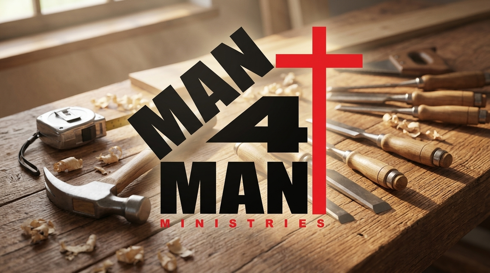
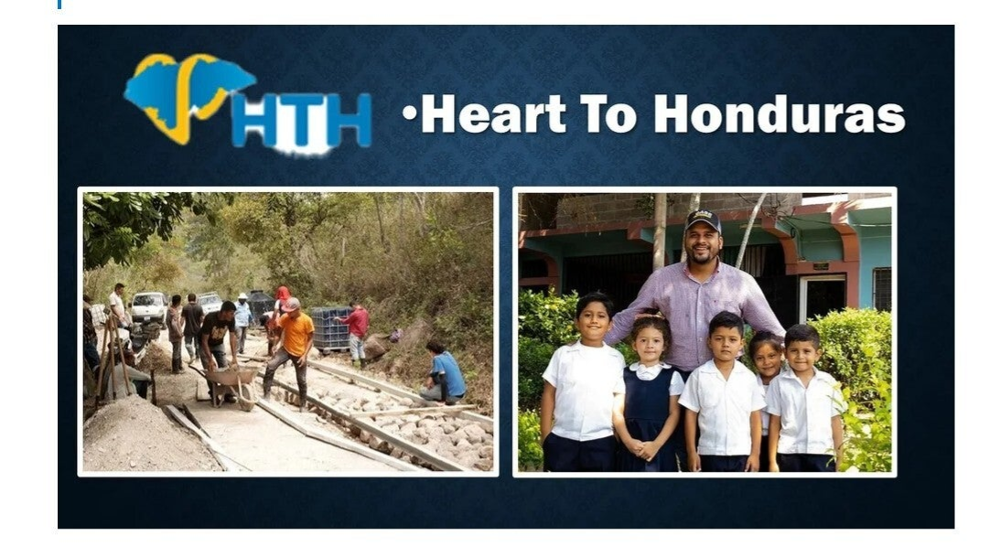
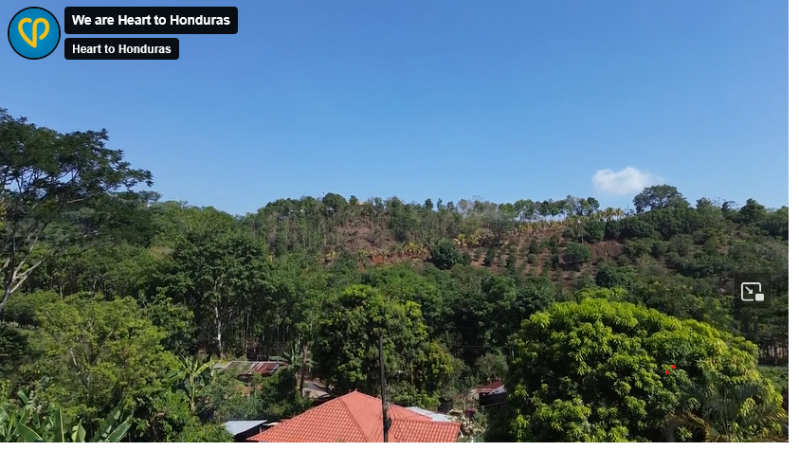
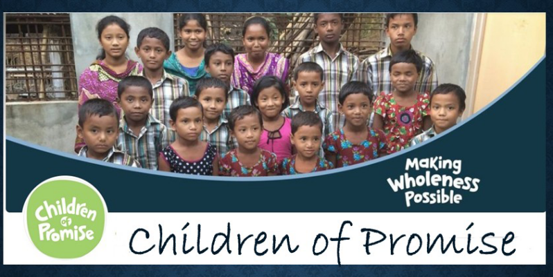
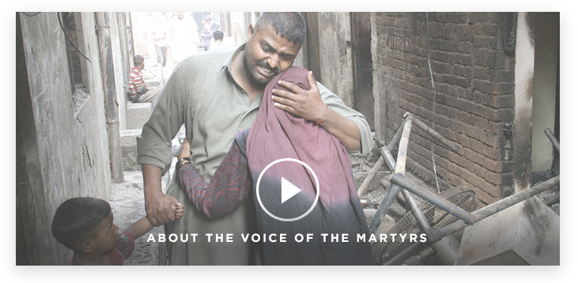
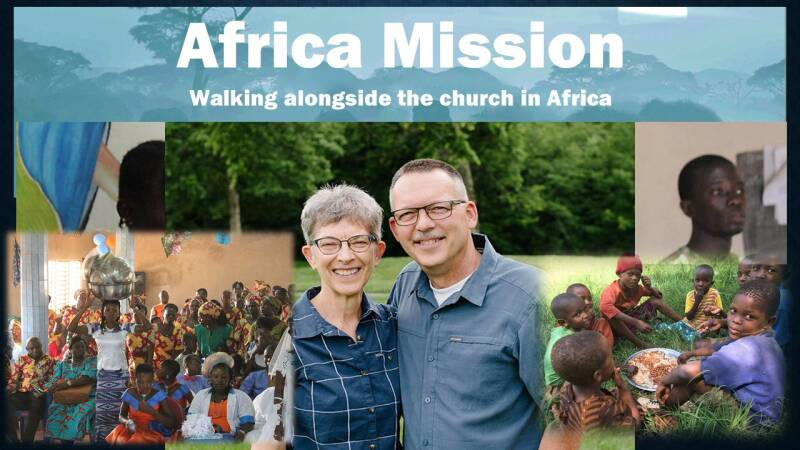

Meeting physical and spiritual needs across Chesterfield, Indiana, our state, the nation, and around the world.

Distributing nutritious canned goods, dry staples, and fresh groceries to local families facing food insecurity in the Chesterfield area.
Donations & Volunteers Welcome
Providing confidential emergency assistance and financial bridge relief for community members undergoing acute crises or hardship.
Coordinated via Church Office

Men putting faith into action with tool belts and lawn equipment: completing home repairs, yard work, and accessibility improvements for church members and neighbors.
Men Serving the Community
Partnering with Church of God congregations across the Hoosier state for youth camps, leadership training, and church planting.
Our national headquarters in Anderson, Indiana, facilitating global missionary sending, disaster relief, and credentialing.
Our congregation faithfully prays for, gives toward, and supports international ministries preaching the Gospel and providing tangible relief.

We see rural Honduran communities as a place to truly belong. Partnering with local leaders to build clean water pipelines, provide medical access, and cultivate discipleship.


Child sponsorship ministry of the Church of God transforming lives across 30+ nations through nutrition, medical care, and Christian education.
Global Child Advocacy
Serving persecuted Christians in hostile regions around the globe with Scripture delivery, shelter, trauma relief, and prayer mobilization.
Standing with the Persecuted

Watch inspirational missionary video updates and firsthand reports of God moving powerfully across the nations.
